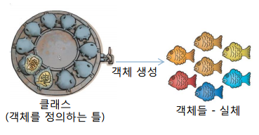
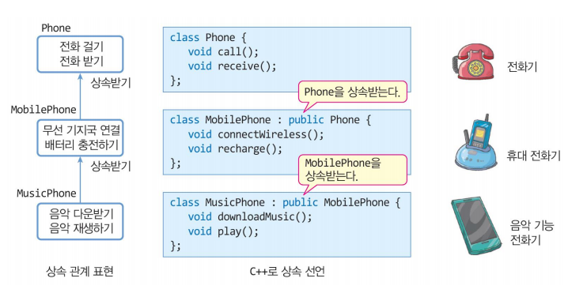
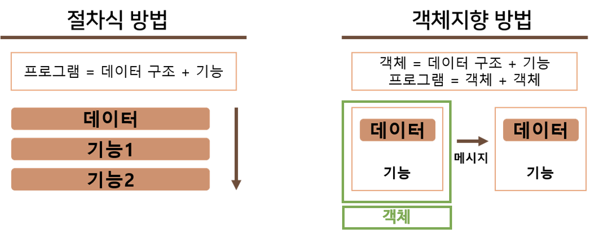
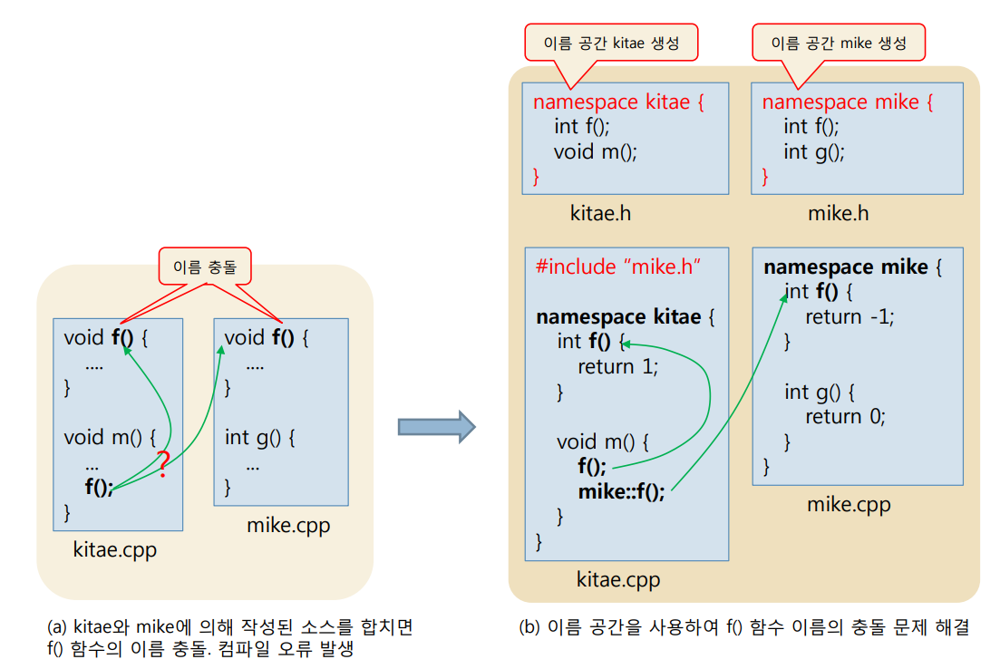
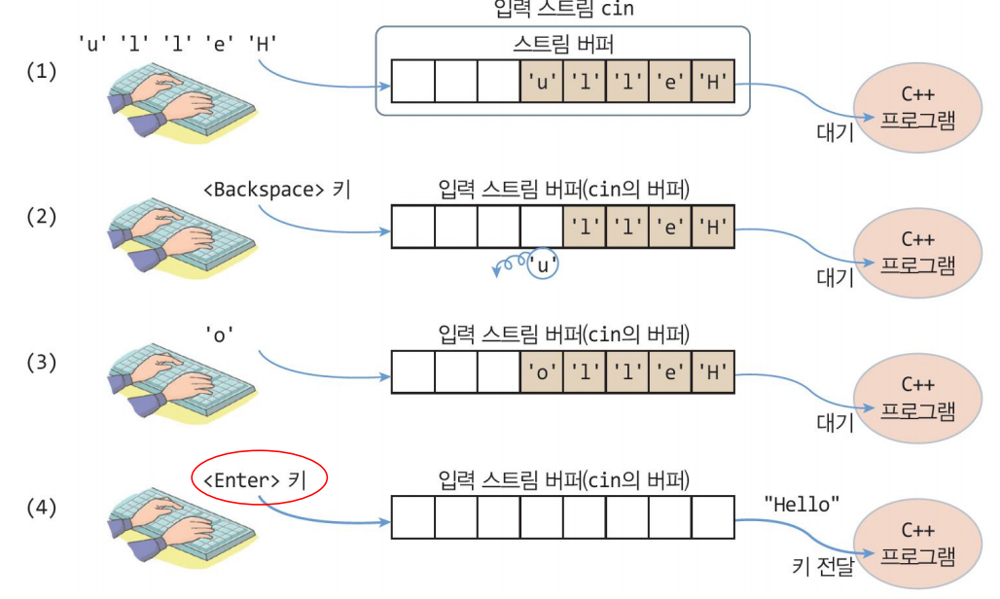
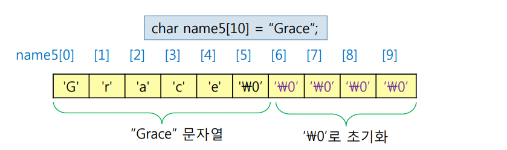
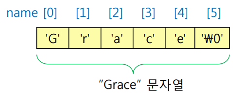
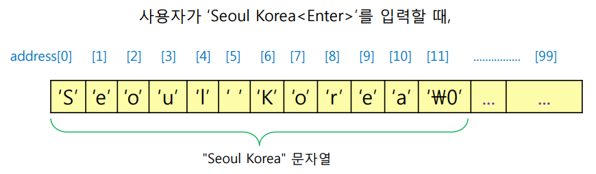

C++ 언어 소개¶
'명품 C++Programming - 황기태' 1장 학습 내용
1절. C++
2절. 객체
3절. 객체 지향
4절. C++의 기본 요소
5절. 입력
6절. 문자열
1절. C++¶
C++ 설계 목적¶
| 목적 | 특징 | 설명 |
|---|---|---|
| C언어 호환성 |
C언어 문법 계승 | - 소스 레벨 호환성 : 기존 C 프로그램 그대로 사용 - 링크 레벨 호환성 : C 목적 파일과 라이브러리를 C++ 프로그램에서 링크 가능 |
| 객체 지향 | 캡슐화 상속 다형성 |
- 소프트웨어 재사용으로 생산성 향상 - 복잡하고 큰 규모의 소프트웨어 작성 / 관리 / 유지보수에 용이 |
| 타입 확인 | 엄격한 타입 체크 | - 실행 시간 오류 가능성 감소 - 디버깅 용이 |
| 실행 시간 | 효율성 저하 최소화 | - 작은 크기의 멤버 함수 잦은 호출 가능성 => 인라인 함수로 해결 |
C++ 기능¶
| 기능 종류 | 설명 |
|---|---|
| 함수 중복 (Function Overloading) |
매개 변수 개수 & 타입이 다른 동일한 이름의 함수들 선언 |
| 디폴트 매개 변수 (Default Parameter) |
매개 변수에 디폴트 값이 전달되도록 함수 선언 |
| 참조 & 참조 변수 (Reference) |
하나의 변수에 별명을 사용하는 참조 변수 도입 |
| 참조 호출 (Call-By- Reference) |
함수 호출 시 참조 전달 |
| New & Delete 연산자 |
동적 메모리 할당/해제를 위해 new & delete 연산자 도입 |
| 연산자 재정의 | 기존 C++ 연산자에 새로운 연산자 정의 |
| 제네릭 함수 & 클래스 |
데이터 타입에 의존하지 않고 일반화시킨 함수나 클래스 작성 가능 |
2절. 객체¶
객체(Object)¶
- 데이터 분산 방지를 위해 데이터와 기능을 하나로 묶은 그룹
객체 지향 언어(Object-oriented Language)¶
- 컴퓨터 프로그래밍의 한 가지 기법
- 객체 생성 및 사용하는 프로그래밍 언어
- 프로그램을 다수의 "객체"로 생성한 후 상호작용
3절. 객체 지향¶
캡슐화¶
- 데이터를 캡슐로 싸서 외부의 접근으로부터 보호
- 클래스로 캡슐 표현

클래스 & 객체¶
| 종류 | 설명 |
|---|---|
| 클래스 | 객체를 만드는 틀 |
| 객체 | 클래스에서 생겨난 실체 ex) 객체(object) == 실체(instance) |
// 원 추상화
class Circle
{
private:
int radius; // 반지름
public:
Circle(int r) : radius(r)
{
}
double getArea() const
{
return 3.14 * radius * radius;
}
};
상속성(Inheritance)¶
- 자식이 부모의 유전자를 물려 받는 것
C++ 상속¶
- 객체가 자식 클래스의 멤버와 부모 클래스에 선언된 모양 그대로 멤버들을 가지고 탄생

다형성(Polymorphism)¶
- 하나의 기능이 경우에 따라 다르게 작동하는 현상
- 연산자 중복
- 함수 중복
- 함수 재정의(overriding)
객체 지향 도입 목적¶
| 목적 | 설명 |
|---|---|
| 소프트웨어 생산성 향상 | - 소프트웨어 생명 주기 단축 문제 해결 - 작성된 코드의 재사용 - C++ 클래스 상속 및 객체 재사용 |
| 실세계에 대한 쉬운 모델링 | - 과거 : 수학 연산이나 통계 처리에 편리한 절차 지향 언어가 적합 - 현대 : 물체, 객체의 상호 작용에 대한 묘사 필요 / 객체로 구성된 실세계에는 객체 지향 언어가 적합 |
절차 지향 프로그래밍과 객체 지향 프로그래밍¶

(여기부터 다시 작성)
4절. C++의 기본 요소¶
#include¶
-
include
¶ - 전처리기(C++ Preprocessor)에게 내리는 지시
헤더 파일을 컴파일 전에 소스에 확장하도록 지시
헤더 파일 - 표준 입출력을 위한 클래스와 객체, 변수 등을 선언
- ios, istream, ostream, iostream 클래스 선언
- cout, cin, <<, >> 등 연산자 선언
화면 출력¶
- cout과 << 연산자 이용
- cout 객체
- 스크린 출력 장치에 연결된 표준 C++ 출력 스트림 객체
- C++에서는 C언어에서 사용했던 printf()와 scanf()를 사용하지 않음
헤더 파일에 선언 - C언어에서 사용했던
는 사용하지 않음 - std 이름 공간에 선언 : std::cout 으로 사용
- << 연산자
- 스트림 삽입 연산자(stream insertion operator)
- C++ 기본 산술 시프트 연산자(<<)가 스트림 삽입 연산자로 재정의
- ostream 클래스에 구현
- 오른쪽 피연산자를 왼쪽 스트림 객체에 삽입
- cout 객체에 연결된 화면에 출력
- 여러 개의 << 연산자로 여러 값 출력
<< 연산자 활용¶
- 문자열 및 기본 타입의 데이터 출력
- bool, char, short, int, long, float, double 타입 값 출력
int n = 3;
char c = '#';
std::cout << c << 5.5 << '-' << n << "hello" << true;
// 출력 예시
// #5.5-3hello1
- 함수 호출 가능
- 다음 줄로 넘어가기
- '\n'이나 'endl' 조작자 사용
- 예제 1. cout과 << 연산자 활용 예제
SourceCodeChecking
namespace¶
- 이름 공간 생성 및 사용
- 이름 공간 사용
- 이름 공간 :: 이름

std¶
- std:: 란?
- C++ 표준에서 정의한 이름 공간(namespace) 중 하나
헤더 파일에 선언된 모든 이름 : std 이름 공간 안에 있음 - cout, cin, endl 등
- std 이름 공간에 선언된 이름을 접근하기 위해 std:: 접두어 사용
- std::cout, std::cin, std::endl
- std:: 생략
- using 지시어 사용
using namespace std;
// std 이름 공간에 선언된 모든 이름의 std::사용 생략
cout << "안녕하세요!" << endl;
// 위의 cout과 endl에 std가 생략된 모습을 볼 수 있음
이 std 이름 공간 내에 선언 - 보통 아래와 같이 모두 선언함
2절. 입력¶
cin과 >> 연산자¶
- cin
- 표준 입력 장치인 키보드를 연결하는 C++ 입력 스트림 객체
- '>> 연산자'
- 스트림 추출 연산자(stream extraction operator)
- C++ 산술 시프트 연산자(>>)가
헤더 파일에 스트림 추출 연산자로 재정의됨 - 입력 스트ㅡ림에서 값을 읽어 변수에 저장
- C++ 산술 시프트 연산자(>>)가
- 연속된 >> 연산자를 사용하여 여러 값 입력 가능
cout << "너비와 높이 입력 >> ";
cin >> width >> height;
cout << width << '\n' << height << '\n';
// 출력 예시
// 너비와 높이 입력 >>23 36
// 23(width 값)
// 36(height 값)
-
예제 2. 너비와 높이 입력받기 확장 예제
SourceCodeChecking -
cin의 특징
- 입력 버퍼를 내장
키가 입력될 때까지 입력된 키를 입력 버퍼에 저장 - 도중에
키를 입력하면 입력된 키 삭제
- 도중에
- '>> 연산자'
-
키가 입력되면 cin의 입력 버퍼에서 키 값을 읽어 변수에 전달 -
cin으로부터 키 입력받는 과정

실행문 중간에 변수 선언¶
- C++의 변수 선언
- 변수 선언은 아무 곳이나 가능
int width;
cout << "너비 입력 >> ";
cin >> width;
// 키보드로부터 너비를 입력받음
cout << "높이 입력 >> ";
int height;
cin >> height;
// 키보드로부터 높이를 입력받음
int area = width * height;
cout << "면적은 " << area << endl;
// 면적을 출력한 후 한 줄 띄어씀
- C++ 변수 선언 방식의 장점
- 변수를 사용하기 직전 선언함으로써 변수 이믈에 대한 타이핑 오류 줄임
- C++ 변수 선언 방식의 단점
- 선언된 변수를 일괄적으로 보기 힘듦
- 코드 사이에 있는 변수를 찾아야 됨
타이핑 오류 가능성 해소¶
- 선언부에 모든 변수를 선언하는 경우, 타이핑 오류 가능
int time, timer;
timer = 5;
// time에 5를 저장하려다가 timer로 잘못 입력한 경우
// 컴파일 오류는 발생하지 않음
// 잘못된 실행 결과 발생
timer = 3;
- 변수 사용 전에 변수를 선언하면, 타이핑 오류 사전 발견
3절. 문자열¶
C++ 문자열¶
- C++의 문자열 표현 방식 : 2가지
- C-스트링 방식 - '\0'로 끝나는 문자 배열
char name1[6] = {'G', 'r', 'a', 'c', 'e', '\0'};
// name1은 문자열 "Grace"
char name2[5] = {'G', 'r', 'a', 'c', 'e'};
// name2는 문자열이 아닌 단순 문자 배열

- string 클래스 이용
헤더 파일에 선언 - 다양한 멤버 함수 제공, 문자열 비교, 복사, 수정 등
C-스트링 방식으로 문자열 다루기¶
- C언어에서 사용한 함수 사용 가능
- strcmp(), strlen(), strcpy() 등
이나 헤더 파일 #include 필요
헤더 파일을 사용하는 것이 더 나음 - C++ 표준 방식
cin을 이용한 문자열 입력¶

-
예제 3. 문자열 입력받고 출력하는 예제
SourceCodeChecking -
예제 4. 암호를 입력받고 프로그램을 종료하는 예제
SourceCodeChecking
cin.getline()으로 공백이 낀 문자열 입력¶
- 공백이 있는 문자열 입력받는 방법
- cin.getline(char buf[], int size, char delimitChar)
- buf에 최대 size-1개의 문자 입력 후 끝에 '\0' 붙임
- delimitChar를 만나면 입력 중단 후 끝에 '\0' 붙임
- delimitChar의 디폴트 값은 '\n'(
키)
- delimitChar의 디폴트 값은 '\n'(
char address[100];
cin.getline(address, 100, '\n');
// 최대 99개의 문자를 읽어 address 배열에 저장
// 도중에 <Enter> 키를 만나면 입력 중단

- 예제 5. cin.getline()을 이용한 문자열 입력 예제
SourceCodeChecking
C++에서 문자열을 다루는 string 클래스¶
- string 클래스
- C++에서 가장 추천하며 C++의 표준 클래스
- 문자열의 크기에 따른 제약 없음
- string 클래스가 스스로 문자열의 크기에 맞게 내부 버퍼 조절
- 문자열 복사, 비교, 수정 등 다양한 함수와 연산자 제공
- 객체 지향적
헤더 파일에 선언 -
include
¶
-
-
C-스트링보다 다루기 쉬움
-
예제 6. string 클래스를 이용한 문자열 입력 예제
SourceCodeChecking